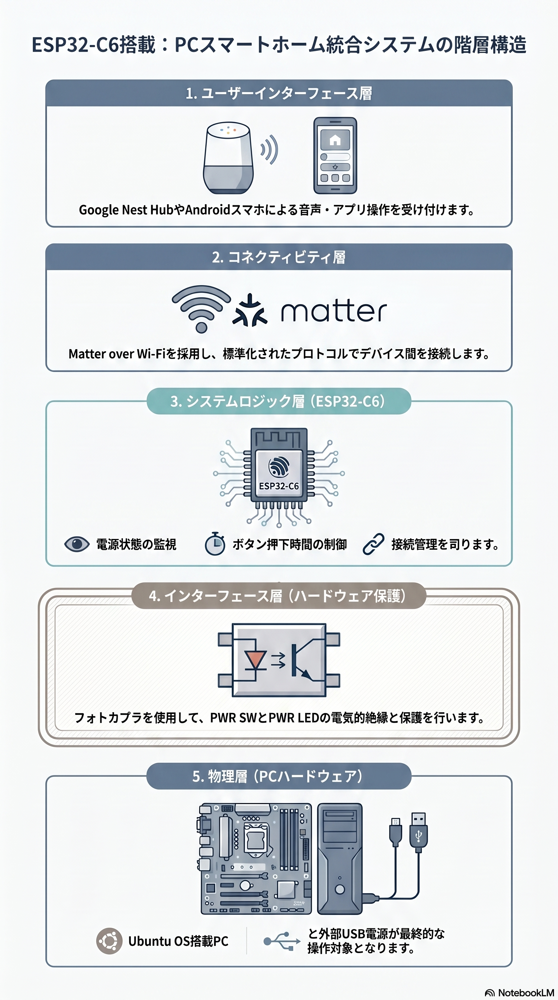

Video
About this Project
本プロジェクトは、Ubuntu PCにESP32-C6を統合し、最新のスマートホーム規格「Matter」に対応させる試みです。 PCの電源状態を他の家電と同様にシームレスに管理・操作できるようにすることを目指しています。


Specification
1. プロジェクト概要
本プロジェクトは、Ubuntu PCをMatter over Wi-Fiプロトコルを通じてスマートホームエコシステムへ統合し、既存の家電製品と同様のシームレスな電源管理を実現することを目的とする。具体的には、Waveshare ESP32-C6-GEEKをインターフェースとし、物理的なスイッチ操作を介在させずにデジタル環境からPCの制御を可能にする。
- 基本コンセプト: Musicサーバー等のUbuntu PCに対し、スマートホーム規格「Matter」を適用。デバイスの前まで移動することなく電源操作を完結させ、洗練されたユーザー体験と省電力運用を両立する。
- 主要機能:
- リモート操作: 外出先からの操作や、Google Nest Hub等の音声アシスタントによる制御。
- 状態監視: PCのPWR LED信号を検知し、稼働状態をリアルタイムにフィードバック。
- 自動化連携: スケジュール設定による定時起動や一括シャットダウン。
- 安全設計: フォトカプラ（PC817）を用いた電気的分離により相互保護を徹底。
2. ハードウェア仕様
制御コアとして、ケース封入済みのUSBスティック型開発ボード「Waveshare ESP32-C6-GEEK」を採用する。
- マイクロコントローラ: ESP32-C6（Wi-Fi 6、Bluetooth 5.0、Zigbee/Thread対応）
- ストレージ: 16MB FLASH搭載
- ディスプレイ: 1.14インチLCD（135x240ピクセル）標準装備
- インターフェース: USB-A端子（バスパワー駆動対応）、UART、I2C
- ユーザーインターフェース: オンボードBOOTボタン、RGB LED搭載
3. ピンアサインおよび回路構成
ESP32-C6とPCマザーボードの物理接続において、電気的な干渉や過電圧による故障を防ぐため「Hailege 2チャンネル フォトカプラ絶縁ボード (PC817)」を介在させ、ガルバニック絶縁（Galvanic Isolation）を構築する。
| ESP32-C6 側 | 信号種別 | 接続先*1 | 役割 |
|---|---|---|---|
| GPIO 0 | Digital Output | PC PWR SW ピン | 電源ON/OFFトリガー（擬似的な物理ボタン押下） |
| GPIO 10 | Digital Input | PC PWR LED ピン | 稼働状態の検知（High: ON / Low: OFF） |
*1.フォトカプラ経由
- Microcontroller: ESP32-C6 (Matter over Wi-Fi)
- Host OS: Ubuntu (with ACPI integration)
- Protocol: Matter (On/Off Light/Switch)
- Controller: Google Nest Hub / Android Device
設計上の留意点:
- 手動操作の維持: 本回路接続後も、PC筐体側の物理電源ボタンによる操作は引き続き有効であり、安全性を確保。
- ロジック: GPIO 10はPower LED端子の電圧レベルを監視し、バイナリステータスをMatterのOn/Offクラスタへ反映。
4. 階層アーキテクチャ分析
システムのソフトウェアスタックは、以下の4層構造として定義される。

- Application層: ユーザーロジックおよびデバイスの状態定義
- Matter層: Matter SDKによるプロトコル実装（Matter Accessoryとして動作）
- Arduino層: デバイス制御およびGPIO抽象化レイヤー
- Wi-Fi層: Wi-Fi 6（802.11ax）を用いた物理通信（ローカル低遅延通信）
5. UI/UX設計およびロジック
1.14インチLCDを活用し、以下の情報をリアルタイムに可視化する。
- PCステータス: 稼働状況（POWER ON / SHUTDOWN）の視覚的表示
- ネットワーク情報: 割り当てられたIPアドレス、Wi-Fi電界強度
- コミッショニング: Matterペアリング用のQRコード表示
- 操作プロセス: Google Homeアプリ、または音声コマンドによる制御
- Matter統合: Bluetooth LE 5.0を使用した初期コミッショニング
6. 筐体・設置仕様

フォームファクタの利点 ESP32-C6-GEEKは、基板が強固なケースに収められたUSBスティック形状であり、以下のメリットを提供する。
- 設置の柔軟性: 外部USBポートへの装着に加え、内部USBピンヘッダ経由での隠蔽設置も可能
- 電源の簡素化: USBバスパワーから電力を取得するため、別途電源配線が不要
7. 開発環境

安定したMatter over Wi-Fi 6の実装および統合のため、以下のツールセットを推奨する。
- SDK: ESP-IDF v5.1以降
- 開発フレームワーク: Arduino環境
- セットアップツール: Google Home App（BLE 5.0）
- コントローラー: Google Nest Hub（第2世代）